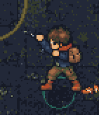
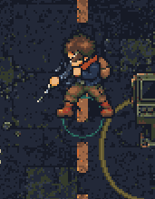

Reproduction study, not a fixed game candidate. The existing standing bridge covers East → NE only. Other directions and moving Aim/Fire retain the old bank. Changing weapon depth does not repair source anatomy.
Actual cached-resource renderer output from the unchanged depth candidate. Source pose means the same selected character layers with its separate weapon disabled.


576 armed samples: 24 ground directions × 3 distances × Aim/Fire × stationary/moving × 2 skins. 40 select received holds; 248 stationary cases retain outside-coverage poses; 288 moving cases use the old moving bank. These counts describe this sampled grid, not visual acceptance or complete transition coverage.